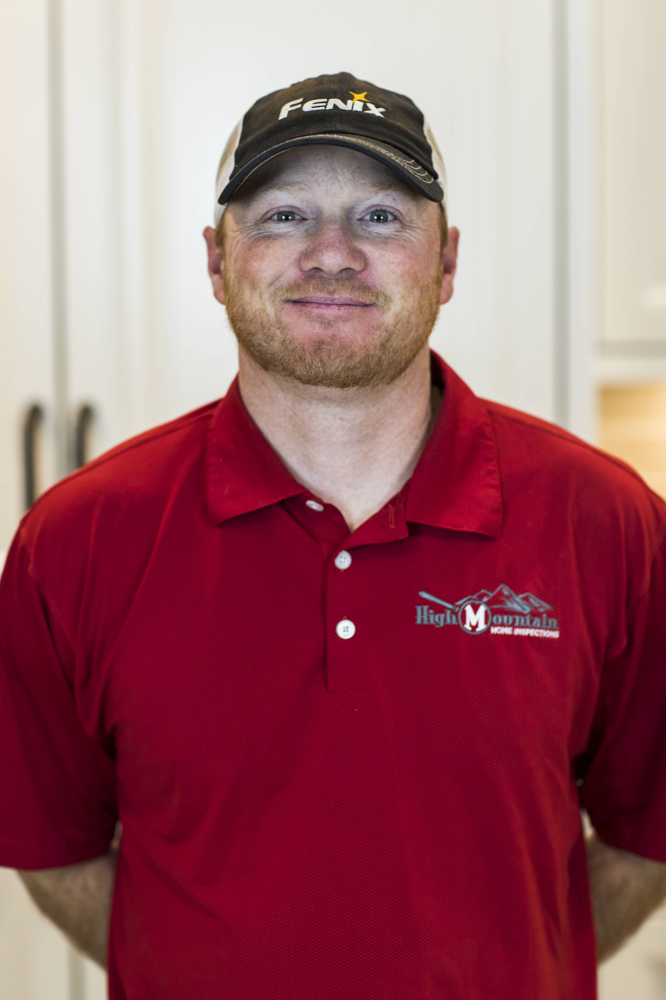

Kory Wayment
Kory was raised in Warren, Utah where he grew up on a dairy farm ran by his family. He attended Fremont High School, then later graduated with his degree from Salt Lake Community College.
In 2001 while attending college on a baseball scholarship Kory was drafted in the 23rd round by the Oakland A's to become a professional baseball player. While spending almost a decade traveling all over North America, working his way up through the minor leagues he developed a work ethic, drive and an appreciation for perseverance.
Once retiring from baseball in 2008 he jumped right into the real estate world and has had great success in selling, building and investing in many real estate ventures.
After a short career as a realtor he noticed the immense value for both an honest and knowledgeable home inspector to help educate home buyers of all types.
In the Fall of 2012 he founded High Mountain Home Inspections and has since been one of the most reputable, honest and fastest growing inspection companies in Northern Utah. Closing in on almost 5,000 home inspections he prides himself on treating home buyers with the upmost respect, showing patience, honesty and a genuine care for every home buyer.
Kory currently resides with his wife Witney, children Maura, Walt, and Nora on a small farm North of Brigham City where he raises beef cattle as a hobby and spends most of his time outside.

John Pilarczyk
John has been in the construction industry for the past 18 years. There he has learned the ins and outs of every construction trade. John was a superintendent at the ripe age of 26 years old.
He built over 100 homes and 312 storage units. John learned the importance of interacting with homeowners, subcontractors, and city inspectors. 13 of those 18 years he specialized in the exterior side of homebuilding where he was regarded as one of the top installers in Northern Utah.
In John’s spare time he enjoys camping and ATVing with his family, but his passion is hunting with his boys Tanner and Landon while his wife and daughter Tenille and BrookLyn have mommy-daughter time. Honesty and integrity are his biggest traits and he would love to “Look Closer at Your Investment!”
Corbet Bess
Corbet has been involved in the construction and real estate industry his whole life. Growing up, his family owned and operated various companies in the industry. His dad and step dad as general contractors, mom and grandpa as real estate agents, and other family members owning plumbing and excavation companies. Corbet also currently operates his step dads roofing company, so it's safe to say he knows his way around a job site.
In his spare time Corbet enjoys being around his family, wife Cheltsea, son Cooper, and his parents and siblings. He has a very adventurous family that loves to go out and try new things, making plenty of unforgettable memories. If you don't catch Corbet at work or with family, he's probably out hunting the marsh or the high country on his atv or snowmobile. He also loves to go camping, fishing and enjoy the outdoors.
Tucker White
Tucker got his start in the industry in his hometown of Roanoke, Virginia. Since he was a kid, Tucker has experienced every aspect of the construction business working with his dad’s general contracting company. From flipping houses to new construction, he has seen it all in his 14 years in the business.
After college, Tucker travelled the country for a couple of years, guiding backpacking and climbing in the mountains of Wyoming, California, North Carolina and Hawaii. In 2014, Tucker hiked the entire Appalachian Trail (2,185.3 miles from Georgia to Maine). By 2015, Tucker knew he was ready to return to the industry he grew up in.
Since moving to Utah in June of 2017, Tucker has continued working in construction through small contracting projects and home inspecting. Over his time in the industry, he has developed a keen eye for potential problems in residential and commercial buildings.
When he’s not working, Tucker can usually be found in the great outdoors. He enjoys rock climbing, mountain biking, snowboarding, and camping with his girlfriend and two dogs.